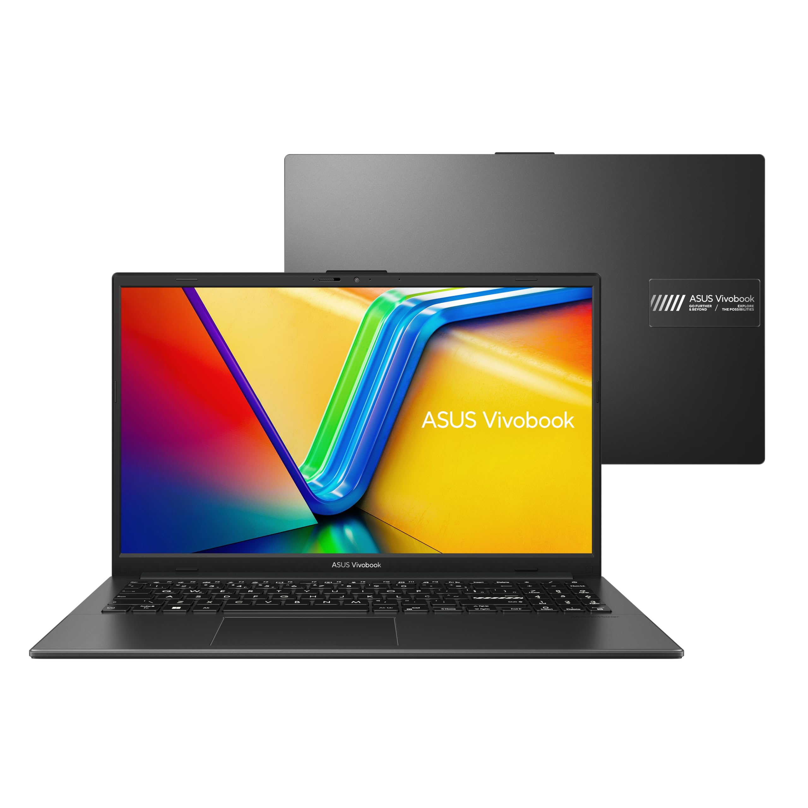

ASUS Vivobook Go 15: desempenho, tela e pontos positivos do notebook com Ryzen 5
📅 Publicado em 19/07/2026
O ASUS Vivobook Go 15 é um notebook voltado para quem busca um equipamento confiável para estudar, trabalhar e realizar as tarefas do dia a dia sem gastar o valor de um modelo premium. Equipado com o processador AMD Ryzen 5 7520U, 8 GB de memória LPDDR5, SSD NVMe de 256 GB e tela Full HD de 15,6 polegadas, ele entrega um conjunto equilibrado para produtividade, navegação na internet, videoconferências e consumo de conteúdo. Outro destaque é o design leve e moderno, aliado à construção característica da ASUS, empresa reconhecida pela boa qualidade de seus notebooks. Mas será que ele realmente vale a pena? Nesta análise, reunimos os principais pontos para ajudar na sua decisão.
Design e Construção
O Vivobook Go 15 apresenta um visual discreto e elegante, adequado tanto para ambientes profissionais quanto acadêmicos. Seu acabamento transmite boa sensação de qualidade, enquanto o peso de aproximadamente 1,63 kg facilita o transporte em mochilas e bolsas. A dobradiça com abertura de até 180° oferece maior flexibilidade durante o uso e pode ser útil em apresentações ou trabalhos em grupo. Outro detalhe interessante é a tampa física para a webcam, que aumenta a privacidade quando a câmera não está sendo utilizada. Embora a construção seja predominantemente em plástico, o notebook apresenta boa resistência para o uso cotidiano.
Tela
A tela de 15,6 polegadas Full HD (1920 × 1080) proporciona imagens nítidas e boa área de trabalho para estudos, planilhas, navegação e entretenimento. O acabamento antirreflexo ajuda a reduzir reflexos em ambientes iluminados, tornando o uso mais confortável durante longos períodos. Para assistir vídeos, realizar reuniões online ou utilizar aplicativos de produtividade, a qualidade da tela atende muito bem à proposta do equipamento.
Desempenho
O processador AMD Ryzen 5 7520U, com quatro núcleos e oito threads, oferece desempenho consistente para a maioria das atividades do dia a dia. O notebook executa com facilidade aplicativos como:
- Microsoft Office.
- Google Chrome com várias abas abertas.
- WhatsApp.
- Spotify.
- Zoom.
- Microsoft Teams.
- Google Meet.
- YouTube.
O SSD NVMe reduz significativamente o tempo de inicialização do sistema e torna a abertura de programas bastante rápida. Já a placa gráfica integrada AMD Radeon 610M consegue executar jogos leves e títulos menos exigentes, porém não foi desenvolvida para jogos pesados ou edição profissional de vídeos.
Memória e Armazenamento
O modelo possui 8 GB de memória LPDDR5, tecnologia mais moderna e eficiente em consumo de energia. Para a maioria dos usuários, essa quantidade é suficiente para estudos, trabalho e multitarefa moderada. O armazenamento fica por conta de um SSD NVMe de 256 GB, que oferece excelente velocidade para abrir arquivos, instalar programas e iniciar o sistema operacional. Quem pretende armazenar muitos vídeos, fotos ou jogos poderá precisar utilizar armazenamento externo ou serviços em nuvem.
Sistema Operacional
O notebook acompanha o KeepOS, um sistema baseado em Linux. Ele atende bem usuários que já utilizam Linux ou que pretendem realizar tarefas básicas como navegação, edição de documentos e estudos. Entretanto, alguns programas disponíveis apenas para Windows podem exigir instalação de outro sistema operacional. Antes da compra, vale verificar se os aplicativos que você utiliza são compatíveis com o KeepOS.
Bateria
A autonomia varia conforme o tipo de uso, brilho da tela, quantidade de programas abertos e conexão utilizada. Durante atividades como navegação na internet, edição de documentos e reprodução de vídeos, o notebook oferece uma autonomia adequada para acompanhar boa parte da rotina diária. Como em qualquer notebook, tarefas mais pesadas, como jogos e edição de vídeo, aumentam o consumo de energia e reduzem o tempo longe da tomada.
Conectividade
O ASUS Vivobook Go 15 oferece um conjunto de conexões suficiente para a maioria dos usuários. Entre elas estão:
- Wi-Fi.
- Bluetooth.
- Porta USB-C.
- Portas USB-A.
- Saída HDMI.
- Entrada para fones de ouvido.
Essas conexões permitem utilizar monitores externos, periféricos, pendrives e diversos acessórios sem dificuldades.
Especificações
- Tela Full HD antirreflexo de 15,6 polegadas.
- Resolução de 1920 × 1080 pixels.
- Processador AMD Ryzen 5 7520U.
- Placa gráfica AMD Radeon 610M integrada.
- 8 GB de memória LPDDR5.
- SSD NVMe de 256 GB.
- Sistema operacional KeepOS (Linux).
- Webcam HD com tampa de privacidade.
- Dobradiça com abertura de até 180°.
- Wi-Fi e Bluetooth.
- Porta USB-C.
- Portas USB-A.
- Saída HDMI.
- Peso aproximado de 1,63 kg.
Pontos positivos
- ✅ Excelente desempenho para estudos e trabalho.
- ✅ Processador Ryzen 5 eficiente.
- ✅ SSD NVMe rápido.
- ✅ Memória LPDDR5.
- ✅ Tela Full HD antirreflexo.
- ✅ Notebook leve e fácil de transportar.
- ✅ Tampa física para a webcam.
- ✅ Boa qualidade de construção.
Pontos negativos
- ❌ A memória RAM é soldada, limitando upgrades.
- ❌ Apenas 256 GB de armazenamento interno.
- ❌ Sistema KeepOS pode não atender todos os usuários.
- ❌ Não é indicado para jogos pesados ou edição profissional.
Conclusão
O ASUS Vivobook Go 15 é uma excelente opção para estudantes, profissionais e usuários que procuram um notebook rápido, moderno e confiável para as tarefas do dia a dia. O conjunto formado pelo processador Ryzen 5 7520U, SSD NVMe, memória LPDDR5 e tela Full HD proporciona uma experiência bastante equilibrada dentro da categoria. Além disso, recursos como a tampa de privacidade da webcam e a dobradiça de 180° agregam praticidade ao uso diário. Por outro lado, quem pretende utilizar programas muito pesados, jogar títulos mais exigentes ou realizar upgrades de memória deve considerar modelos superiores. No geral, o Vivobook Go 15 entrega um excelente custo-benefício para quem busca desempenho, portabilidade e confiabilidade sem investir em um notebook de categoria premium.
Onde comprar
Transparência
Esta análise foi elaborada com base em informações oficiais, especificações técnicas e materiais disponibilizados publicamente. O Análise Certa busca fornecer informações claras e confiáveis para ajudar na decisão de compra.